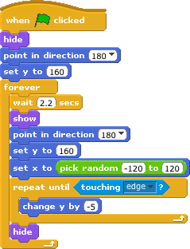

W. H. Bell, The MagPi, Issue 13
One way to start programming is to write simple video games. Scratch has several handy functions which speed up the construction of basic games. This article demonstrates how to produce a racing car dodging game. The game can be easily extended and the principles can be used when writing games using Python or C.
The idea of the game is to drive the car around several objects which scroll down the screen. The game ends if the car goes on the grass or touches one of the objects.
The first step to produce this game is to create or choose the sprites. The racing car was drawn with the Scratch sprite editor. To make the sprite symmetric, half was copied and then mirrored. Once the working car has been produced, go to the Costumes tab of the sprite and click on copy. Then click on Edit for the second sprite.
The second costume will be used for the broken car. The Scratch editor was used to make the car look broken. Before writing the script for the car, some objects are needed. In this case, the ball and the LEGO piece were chosen from the Scratch sprite library. The library of sprites can be viewed by clicking on the folder icon, just below the stage.
The racing car is controlled by a script which has three pieces. These three pieces run in parallel, which allows the program to check the conditions in each piece at the same time. The first block checks the keyboard. If the cursor keys are pressed, the car moves left, right, up or down the screen. The centre of the stage corresponds to x=0, y=0.
The second piece of the script checks to see if the car has touched the grey colour at the side of the road. This colour has to be the same as the colour used on the stage for the program to work. When the racing car touches the edge it says "Sois prudente!" (be careful!) for one second.
The last part of the script checks to see if one of the game over conditions has been reached. There are three conditions which cause the game to finish; (1) the car touches the green grass colour, (2) the car touches a LEGO brick sprite, or (3) the car touches a ballon (ball) sprite. In each case the racing car sprite is changed to costume2, which is the broken car. 'Stop all' then stops the game. This script block also resets the car position to the bottom of the screen when the game starts. x=0 is the middle of the screen in the horizontal direction and y=-100 is the bottom of the screen in the vertical direction.

The LEGO brick and ball are controlled by the same program. To start writing the script for the LEGO brick, click on the LEGO brick sprite icon under the stage window. Then create the script given on the left of this page. When the script has been written, select all of it and click on copy. Then click on the ball and paste the script. For the ball, change the wait statement from 2.2 seconds to 3 seconds. As long as the two wait statements are not multiples of each other, the two objects will not arrive at the same time.
The script for the LEGO brick and ball starts by hiding the sprite. The sprite is then put at the top of the screen, pointing down. The script then enters a loop. Each time the loop runs, the script waits and then shows the sprite. It is then moved to the top of the screen. The starting position is chosen at random, along the x-axis (horizontal plane). The sprite is then moved down the screen by 5 units at a time, until it touches the bottom of the stage. When the sprite touches the bottom of the stage it is hidden and the outer loop moves it back to the top.
To complete the program, draw the stage image. Similar to the racing car, half of the stage was drawn, copied and mirrored. The green and grey colours used in the racing car script were used for the edge of the road and the grass.
There are several ways this program could be made better. The lines in the middle of the road could be changed for another image to create the illusion of movement. Sounds could be added for when the car moves or crashes. Some burning rubber marks could be added when the car slows down. Instead of a LEGO brick and ball, try creating some other cars or cars that drive from the bottom of the screen to the top.
This game could be used as the basis for other games. For example, vertical scrolling space invaders is quite similar. Try swapping the racing car stage picture for a star field. Then add in some weird and wacky alien vehicles, which come racing down or drop things on the heroic space ship.